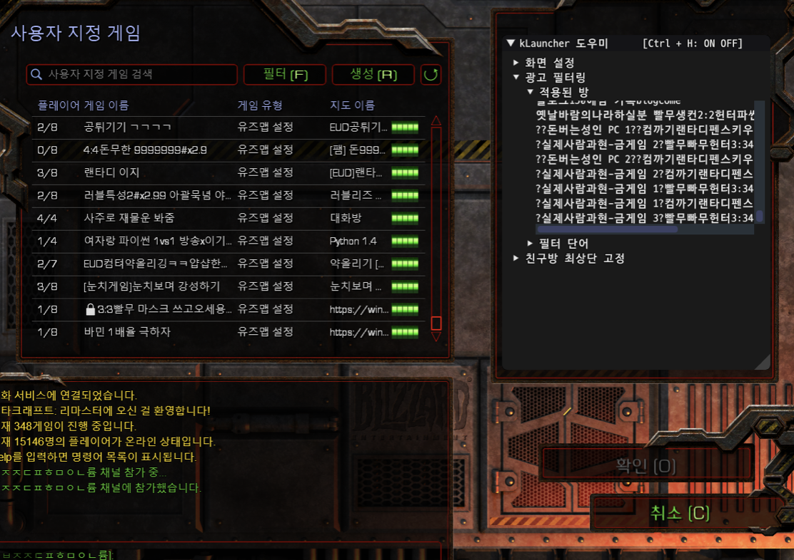
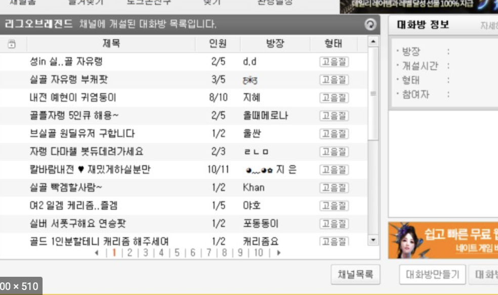
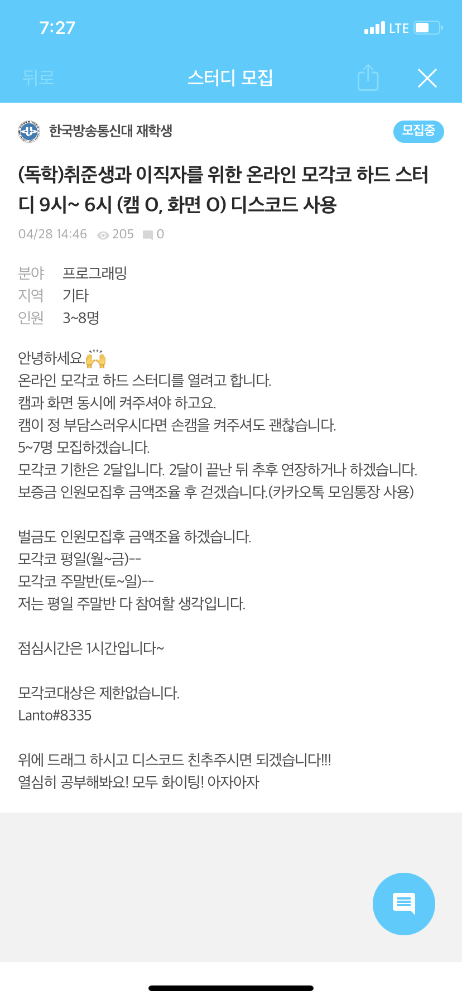
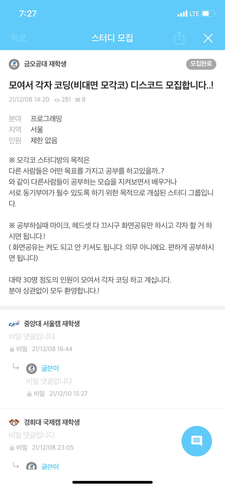
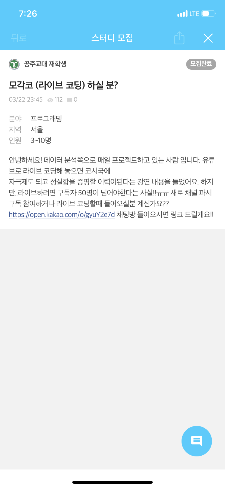
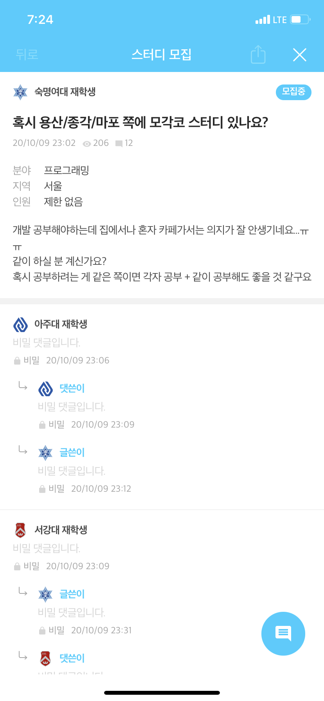
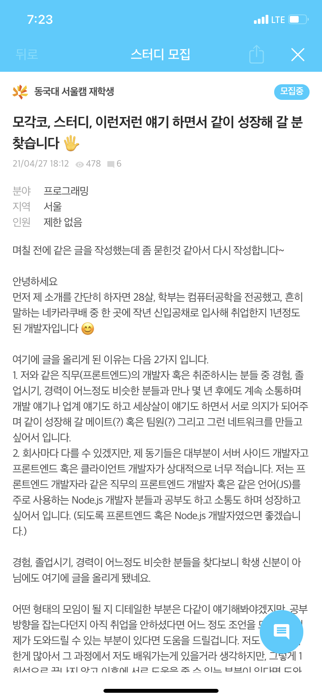
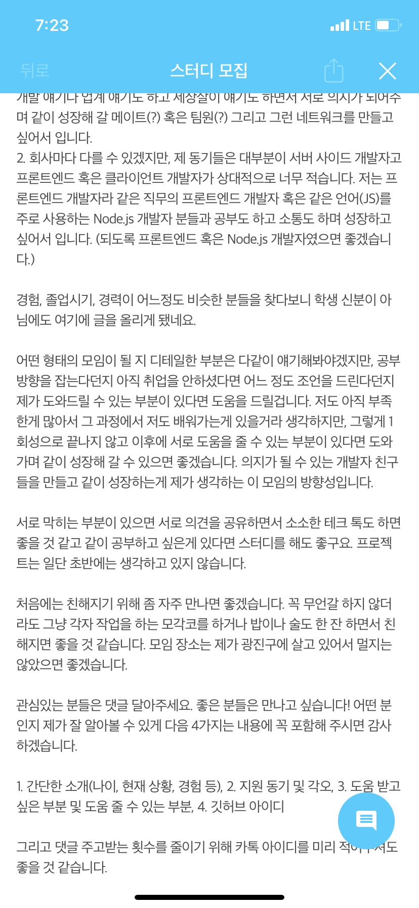
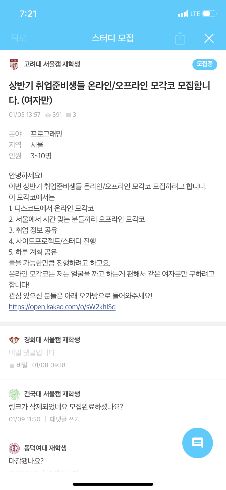

FIRE WIKI : 2022-05-02-숙제
Created by 윤영기, last modified on 5월 04, 2022
모각코 설계 | 영기 | 하령 | 주형 |
BrainStorm | 현재 모각코 시스템은 알아서 친구들을 모아서 디스코드 혹은 줌으로 다같이 들어와 화면공유 혹은 카메라를 키고 같이 공부를 하는 시스템이다 내가 만약 모각코 혹은 코딩을 하는데, 혼자 하기 심심하거나 외로울때! 혹은 코딩을 할 때 막힐 때 다 같이 공부하고 의논할 수 있는 공간이 필요함을 느낄때가 많다 현재 많은 플랫폼들이 존재하지만 (디스코드, 줌, 게더타운 등) 공부를 위한 플랫폼은 따로 존재하지 않는다! 주로 디스코드를 공부용으로 알아서 채널을 편집하여 사용하는 경우가 허다하다 우리가 코딩 공부용 플랫폼을 하나 개설해주자! 내가 얼마나 공부했는지와 목표 설정 업적설정 등 컨텐츠를 넣어서 유입을 하면 좋을 것 같다!
위는 토크온의 로비 마찬가지로, 제목과 인원으로 어떤 사람을 몇명 구하고 있는지 확인이 가능함 여기서 내 프로필, 혹은 현재 접속중인 사람들의 프로필이 보이고, 해당 프로필을 바탕으로 방을 들어올지 말지 설정 할 수 있게?
만약 이런식으로 누군가 방을 파고 모두 나가면 없어지는 스타일이라면 단점이 있을것 같음. 계속 유지되는 방을 파놓고 텍스트 채널에 질문을 남기는 등 이런식의 공간도 필요하다고 느낌 → 마치 디스코드 채널처럼 만약 질문을 받는 형태로 간다면, 코딩 지식인인지 모각코가 주제인지 확실하게 정하고 가야될것 같다 → 둘다 짬뽕되면 너무 중구난방이 되지 않을까..? 하는 두려움이 있어요
| [금액 & 캠 on] [다른 사람들은 뭘 개발하나?] [성실함을 인정받을 수 있다!] [의지가 없어서 오프라인으로 진행하는 모각코도 꽤 있다] [역시 인맥은 소중하다] 팔로워 기능, 친구 기능, 팬 기능 등 [하루 계획 공유 및 사이드 프로젝트] + 추가로 고려해 볼만한 것 초기 사용자는 어떻게 유입할 것인가?
| 1. 비슷한 성향의 사람들끼리 모일 수 있으면 좋겠다.
ex) 진지하게 공부하는 방, 잡담하면서 공부하는 방 2. 코딩 → 공부 코딩으로만 제한하지 않아도 될 것 같다는 생각이 듭니당. 저는 동아리에서 모각코를 했는데 다양한 과 사람들도 오고 다양하게 정보 공유도 하고 잡담을 틈틈이하면서 자극을 받았는데 그게 좋았습니다! 리팩터링하는 것 뿐만이 아니라 자소서 첨삭 이런 것도 도와줄 수 있지 않을까요? 3. 재미 요소 저번에 영기님이 말씀하신 것처럼 성취감을 주는 재미 요소가 있었으면 좋을 것 같습니다. 4. 스터디를 할 때 이런게 불편했어요. 5. 초보자가 오픈소스에 참여하기 어렵다 오픈소스에 기여할 때 여러가지 테스트케이스 작성해서 코드 coverage oo퍼센트 이상 달성, 컨벤션, 등을 지켜야 한다 한번 하면 별 것 아닌데 혼자 하기 어려움 이런게 있는 지도 모름 git도 어려워할 가능성 많음
예전에 라이센스별로 오픈소스 개발 참여해달라고 구인하는 사이트가 있는데 현재는 제대로 유지보수가 되지 않음 → 이걸 한국형 서비스로 활성화한다면 좋겠다
6. 한국형 스택오버플로우 (하령님 아이디어) 7. ONLINE / OFFLINE 온라인으로도 팟을 모집하는 기능이 있었으면 좋겠다. 혼자서 하기 심심할 때 ~~카페에 모각코 3명 모집 중하면 사람들이 올 수 있는 기능 |
Pain Point | 내가 누군가와 같이 코딩을 하고싶지만, 찾기가 마땅하지 않다 내가 공부를 하지만, 내가 얼마나 발전하고 있는지, 얼마나 열심히 하였는지 제대로된 수치로 판단 할 수 없다 확실히 코딩은 누가 옆에 있어야 집중이 잘된다! (나만 그렇게 느낄수도..? 이건 설문지 돌리면 결과가 나오지 않을까요?)
| | 공부를 하고 싶지만 혼자하기에는 손이 가지 않는다. 새벽에 공부를 하다보면 외로운데 같이 친구랑 하고 있다는 사실만으로 자극이 돼서 효율이 올라간다. 공부하다 묻고 싶은 것이 있으면 캡처해서 카톡으로 공유한다. 초보자의 경우 오류나서 질문하면 내가 알려주는 버튼도 잘 찾지 못하고 화면 공유를 해도 글씨가 작아서 보기 힘듦
|
Solution | 웹에 들어오면 깃허브로 연동 oauth typescript 몇자? java 코드 몇줄?
연동돼서 들어오면 선택권이 있음 public 채널에서 내가 원하는 방을 들어 갈 수 있음 private 방에 비밀번호를 치고 친구들이 있는 방에 들어 갈 수 있음
방에 들어와서 text로 연락 할 수 있는 채팅방이 있고, 화면공유도 할 수 있게 설정 내가 현재 코딩을 하고있는 환경에 따라 어떤거에 대하여 작업중인지 알아서 웹에서 찾아서 그에 할당한 시간을 올려준다 https://github.com/iCrawl/discord-vscode VSC에서 내가 무얼 하고있는지 확인해서 discord에 올려주는 기능. 유사하게 사용해서 내가 footer.tsx에서 작업하고 있다면 접속하고 있는 동안 typescript에 대한 시간도 올라가고 React에 대한 시간도 올라가게 설정! 유사하게 Jetbrains류도 설정이 되지 않을까? 싶어요 너무 어렵다면 그냥 내가 스스로 지금 내가 어떤것을 작업중인지 올려놓고 해당하는 시간이 올라가게 설정이 가능? 위 a,b 에서 얻은 결과들을 통계내어 프로필에 작성할 수 있고, 업적같은 재미있는 요소들을 추가할 수 있음. 혹은 깃헙처럼 잔디밭도 꾸밀 수 있을것으로 예상
| [Q&A 시스템] [개인 페이지] 회원은 자신의 개인 페이지가 있다. 지금까지 참여한 모각코 시간 및 질문 답변 등이 보여진다. 모각코 시간으로 잔디를 꾸밀 수도 있다. 모각코를 할 때 어떤 언어를 사용할지 자동으로 혹은 수동으로 지정한다. 각 언어별 모각코 시간 제공 및 잔디 색 배합도 가능하다. 회사별 학교별 랭킹제도 있다. 개발의 백준…!
[디코와의 차이점] | [태그 시스템] 모각코 방에 여러가지 태그를 붙일 수 있으면 좋겠다. 예를 들어서 [공부용으로 확장] 저는 동아리에서 모각코를 했는데 다양한 과 사람들도 오고 다양하게 정보 공유도 하고 잡담을 틈틈이하면서 자극을 받았는데 그게 참 좋았습니다! 자꾸 코딩으로만 제한하지 않아도 될 것 같다는 생각이 듭니당. (공대 애들은 공부할 때 보통 그래프나 수식을 사진 찍어서 톡으로 보낸다. 불편하고 나중에 찾아보기도 힘들다) [재미 요소] solved.ac처럼 정해진 업적 여러개를 깨면 색이 바뀌거나 뱃지를 준다. 예를 들어서, [개발자를 위한 기능] 1. 코드 공유해서 다른 사람도 편집할 수 있게해주는 기능 2. 화면 공유인데 사람 사람에게 표시를 해줄 수 있는 기능(내가 알려주는 버튼을 못 찾거나 오탈자 알려주기) 3. 프로젝트 번개팟 기능(오픈소스처럼)
- 다른 사람이 오픈소스 작업을 하는 것을 보고 자기도 배울 수 있다면 좋겠다
- 4. 한국형 스택오버플로우 (하령님 아이디어) [ONLINE / OFFLINE 기능] ~~카페에 모각코 중하면 사람들이 자유롭게 오갈 수 있는 기능 |
Solved + 백준 의 시스템
플레부터 문제별 난이도 조절 가능 기능
해당 문제에 대한 질문이 가능 → 추후 따봉으로 이어짐
랭킹 시스템이 있어 학교, 기업, 단체간의 경쟁이 있음
물론 개인별 랭킹도 존재함
순위도 매기고, 뱃지도 증정하여 프로필에 자랑 할 수 있음
통계 시스템으로 내가 얼마나 발전했고, 얼마나 무엇을 하였는지 정확하게 수치화해서 알려줌
태그 분포로, 내가 어느 분야를 얼마나 했는지 파악해서 알려줌 → 요새는 그래프 + 티어까지 발전
{kind=link}
{kind=link}
{kind=link}
{kind=link}
{kind=link}
{kind=link}
{kind=link}
{kind=link}
{kind=link}
{kind=link}